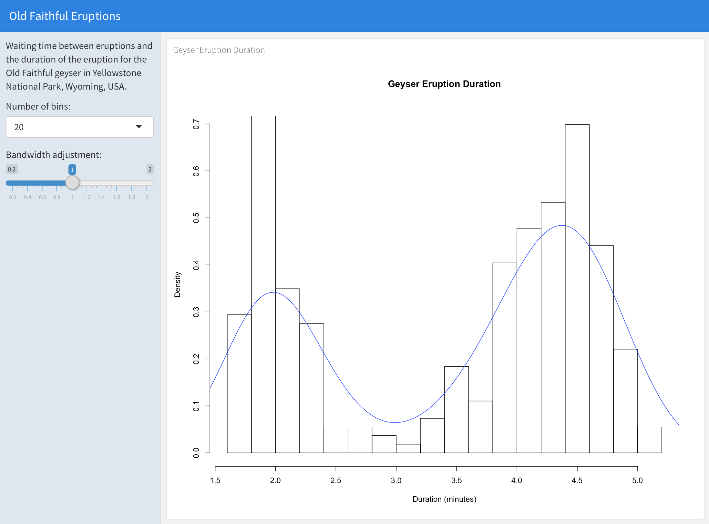

By adding Shiny to a
flexdashboard, you can create dashboards that enable viewers to change
underlying parameters and see the results immediately, or that update
themselves incrementally as their underlying data changes (see reactiveFileReader
and reactivePoll).
This is done by adding runtime: shiny to a standard
flexdashboard and then adding one or more input controls and/or reactive
expressions that dynamically drive the appearance of the components
within the dashboard.
Using Shiny with flexdashboard turns a static R Markdown report into an Interactive Document. It’s important to note that interactive documents need to be deployed to a Shiny Server to be shared broadly (whereas static R Markdown documents are standalone web pages that can be attached to emails or served from any standard web server).
Note that the shinydashboard package provides another way to create dashboards with Shiny.
The steps required to add Shiny components to a flexdashboard are as follows:
Add runtime: shiny to the options declared at the
top of the document (YAML front matter).
Add the {.sidebar} attribute to the first column of
the dashboard to make it a host for Shiny input controls (note this step
isn’t strictly required, but many Shiny based dashboards will want to do
this).
Add Shiny inputs and outputs as appropriate.
When including plots, be sure to wrap them in a call to renderPlot. This is important not only for dynamically responding to changes but also to ensure that they are automatically re-sized when their container changes.
Here’s a simple example of a flexdashboard that uses Shiny:

The first column includes the {.sidebar} attribute and
two Shiny input controls; the second column includes the Shiny code
required to render the chart based on the inputs.
One important thing to note about this example is the chunk labeled
global at the top of the document. The global
chunk has special behavior within flexdashboard: it is executed only
once within the global environment so that its results (e.g. data frames
read from disk) can be accessed by all users of a multi-user
flexdashboard. Loading your data within a global chunk will
result in substantially better startup performance for your users so is
highly recommended.
As described above, you should perform any expensive loading of data
within the global chunk, for example:
Note that special handling of the global chunk is a
recently introduced feature of the rmarkdown package
(v1.1 or later) so you should be sure to install the latest version of
rmarkdown from CRAN before using it:
install.packages("rmarkdown", type = "source")When you use Shiny within a flexdashboard you’ll be making use of both input elements (e.g. sliders, checkboxes, etc.) and output elements (plots, tables, etc.). Input elements are typically presented within a sidebar and outputs within flexdashboard content panes (it’s also possible to combine inputs and outputs in a single pane, this is described in more detail below).
Here’s a simple example of a shiny input and corresponding output:
The sliderInput call makes a slider input named “bins”
available. The renderPlot function is then able to access
the value of the “bins” input via the expression
input$bins.
As illustrated above, inputs are added by calling an R function
(e.g. sliderInput). The Shiny package makes available a
wide variety of functions for creating inputs, a few of them
include:
| R Function | Input Type |
|---|---|
| selectInput | A box with choices to select from |
| sliderInput | A slider bar |
| radioButtons | A set of radio buttons |
| textInput | A field to enter text |
| numericInput | A field to enter numbers |
| checkboxInput | A single check box |
| dateInput | A calendar to aid date selection |
| dateRangeInput | A pair of calendars for selecting a date range |
| fileInput | A file upload control wizard |
Outputs react to changes in input by running their render code
(e.g. the renderPlot example above) and displaying updated
output. The Shiny package also includes a wide variety of render
functions, including:
| R Function | Output Type |
|---|---|
| renderPlot | R graphics output |
| renderPrint | R printed output |
| renderTable | Data frame, matrix, other table like structures |
| renderText | Character vectors |
In the sections below we’ll cover additional details on how to use Shiny components within a flexdashboard. If you aren’t already familiar with Shiny you may also want to consult the Shiny Dev Center, which includes extensive articles, tutorials, and examples to help you learn more about Shiny.
You add an input sidebar to a flexdashboard by adding the
{.sidebar} attribute to a column, which indicates that it
should be laid out flush to the left with a default width of 250 pixels
and a special background color. Sidebars always appear on the left no
matter where they are defined within the flow of the document.
You can alter the default width of the sidebar using the
data-width attribute, for example:
If you are creating a flexdashboard with Multiple Pages you may want to use a single sidebar that applies across all pages. In this case you should define the sidebar using a level 1 markdown header (the same as is used to define pages).
For example, this dashboard includes a global sidebar:
Several examples are available to help you learn more about using Shiny with flexdashboard (each example includes full source code):
The following articles are excellent resources for learning more about Shiny and creating interactive documents:
The Shiny Dev Center includes extensive articles, tutorials, and examples to help you learn more about Shiny.
The Introduction to Interactive Documents article provides a great resources for getting started with Shiny and R Markdown.
The R Markdown website includes additional details on the various options for deploying interactive documents.
After you’ve gotten started with using Shiny within flexdashboard and learned more about Shiny development you may want to review these additional topics which described advanced component layout and embedding existing Shiny applications within a flexdashboard.
There are a couple different approaches to laying out Shiny components within a flexdashboard:
Place inputs in a sidebar and outputs within their own flexdashboard panel (the strategy illustrated in the example above).
Mix inputs and output(s) within a single flexdashboard panel.
The first option is the most straightforward and is highly encouraged if it meets the layout and interactivity requirements of your dashboard. The second option provides for more customized layout but requires the use of Shiny fill layouts.
When you mix multiple Shiny inputs and/or outputs within a
flexdashboard panel it’s good practice to have them fill the bounds of
their container in the same way that other flexdashboard components like
plots and htmlwidgets do. This is possible using the Shiny fillRow
and fillCol
layout functions.
For example, here’s how you’d use fillCol within a code
chunk to ensure that a Shiny input and plot output naturally fill their
flexdashboard container:
If you are new to Shiny then the code above won’t make any sense to you. In that case we highly recommend that you use the default layout strategy described above! (i.e. inputs within the sidebar and outputs within their own flexdashboard containers).
For those familiar with Shiny here are further details on how this example works:
The container is laid out using the fillCol
function, which establishes a single column layout with flexible row
heights.
Flexible height behavior is defined via
flex = c(NA, 1). The NA applies to the first
component (the input panel) and says to not give it flexible height
(i.e. allow it to occupy its natural height). The 1 applies
to the second component (the plot) and says that it should have flexible
height (i.e. occupy all remaining height in the container).
The call to plotOutput includes
height = "100%" to ensure that the plot takes advantage of
the height allocated to it by the fillCol flexible
layout.
Finally, note that unlike the simpler layout examples above this
examples uses an explicit plotOutput / renderPlot pairing
rather than just a standalone renderPlot. This is so that
the plot can be included in a more sophisticated layout scheme (i.e. one
more like traditional ui.R layout).
You can learn more about flexible layouts in the Shiny Dev Center article
on fill layouts as well as the reference
documentation for the fillCol and fillRow
functions.
By default flexdashboard layouts fill the contents of the browser
(vertical_layout: fill). Using the techniques described
above ensures that your Shiny components will play well within a fill
layout, expanding to occupy all available space.
However, when flexdashboards are displayed on mobile phones they
automatically switch to a scrolling layout. In this mode Shiny fill
layouts are displayed at a height of 500 pixels by default. You should
test your dashboards on a mobile phone browser (or using Google Chrome’s
Device
Mode) and if this height isn’t ideal you should provide an explicit
height for the fillCol or fillRow as is done
in the example above.
Shiny Modules enable you to define a piece of Shiny UI and server logic that can be embedded within a larger Shiny application or interactive document. There are a couple of significant benefits to using Shiny Modules in the context of flexdashboard:
You can define Shiny Modules within a separate R script. For Shiny components that require a lot of R code this is often preferable to including all the code inline.
Shiny Modules can accept parameters, which enable them to be more easily re-used in different contexts.
Here is the “WorldPhones” example from above re-written as a Shiny Module (this code is defined in a standalone R script):
worldPhones.R
Here is the code to include the module within a flexdashboard:
You can learn more about creating and using Shiny Modules at the Shiny Dev Center.
While Shiny applications are often defined in standalone R source
files (e.g. ui.R and server.R) it’s also possible to define a full
application inline using the shinyApp
function.
You can embed inline Shiny applications within a flexdashboard. For example, the following code chunk defines a simple Shiny application consisting of a select input and a plot:
You’ll note that this example uses the same “WorldPhones” code which
was the basis of the previous embedding examples. However, in this case
the code is wrapped in a top level fillPage. Also note that
the shinyApp call includes an explicit
options = list(height = 600) for use in scrolling
layouts.
When embedding Shiny components using an inline application
definition an <iframe> is created to host the
application. In contrast, when using Shiny
Modules the components are included inline on the page (inheriting
the containing page’s CSS).
It’s also possible to include a Shiny application defined in an external directory within a flexdashboard. For example, the following code chunk includes one of the Shiny example applications:
Note that in this example we override the default height of 500
pixels via options = list(height=850). This is because this
application uses a sidebar which on mobile layouts will appear on top of
the plot output rather than to the left, which necessitates that more
height be available for its display.
Including an external Shiny application is a good way to re-use an
existing application within a flexdashboard. If however your main goal
is to keep the source code for a set of Shiny components separate from
the main flexdashboard Rmd then Shiny
Modules are a preferable way to achieve this, as they include their
UI inline within the page rather than within an
<iframe>.